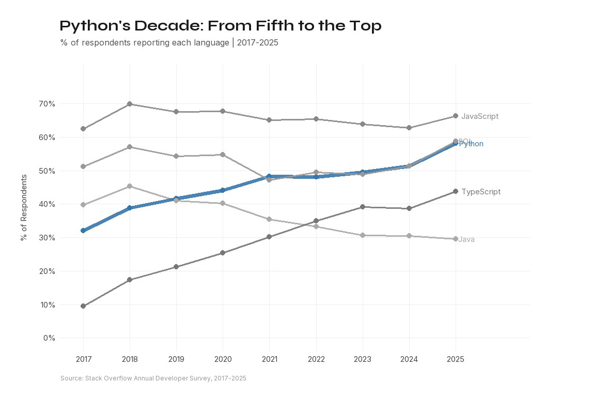
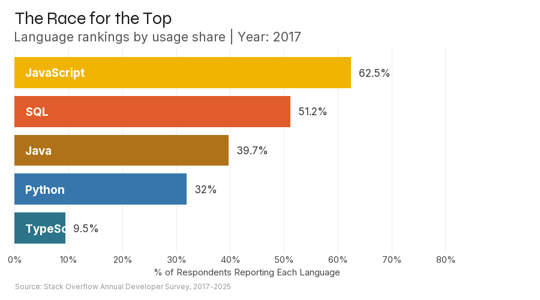
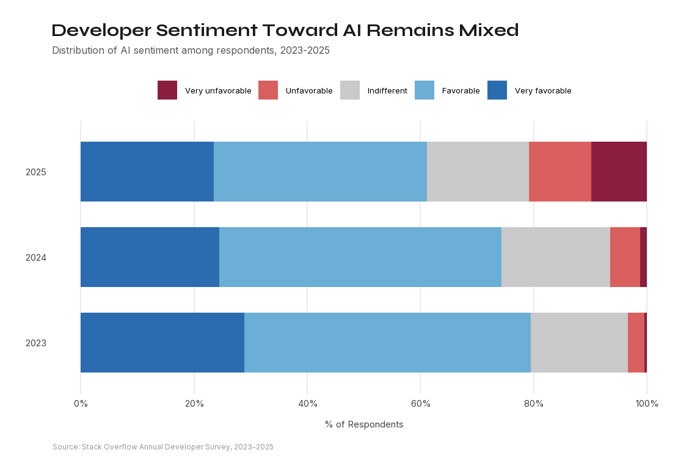
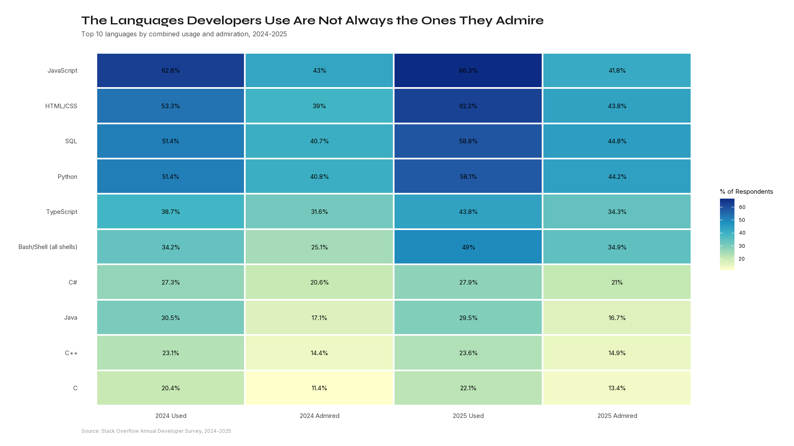

The New
Developer
I’m Ronak Kothari, a sophomore at Rice University studying business and finance.
For this project, I analyzed nine years of Stack Overflow Developer Survey data (2017-2025) to understand how the programming landscape has evolved, and how artificial intelligence is reshaping the way developers work.
The data shows how developer trends have shifted over time, from changes in language usage to the growing role of AI tools in everyday workflows.
The Evidence
Data Source
Stack Overflow Annual Developer Survey (2017-2025), with tens of thousands of global responses each year.
Metrics Calculation
Percentages are based on respondents who provided valid answers for each question in a given year.
Measurement Scope
The analysis focuses on changes in programming language usage, developer preferences, and AI tool adoption over the period 2017 to 2025.
Python’s
Decade
Python steadily increased in usage from 2017 to 2025, moving from a secondary language to one of the most widely used tools among developers.

Race for
the Top
Language rankings shift over time. While some languages remain consistently popular, others gain or lose ground as developer preferences change.

AI
Sentiment
Developers are using AI tools more frequently, but sentiment toward AI remains mixed, with both positive and negative views present.

Work vs.
Admiration
Some languages are widely used in practice, while others are more highly admired. This highlights a gap between what developers use and what they prefer.

AI
Usage by Language
This interactive chart shows how AI usage varies across different programming languages, suggesting that adoption is not uniform across the developer ecosystem.
What Changed
Between 2017 and 2025, the developer landscape shifted in measurable ways. Language trends evolved, new tools emerged, and AI became a regular part of many workflows, but adoption has not been uniform, and sentiment remains mixed.
Languages Still Matter
Core languages like Python and JavaScript remain central, even as rankings shift over time.
AI Is Widely Used
AI tools are increasingly part of development workflows, but usage varies across tasks and ecosystems.
Adoption ≠ Trust
Survey responses show that even as AI usage grows, developer sentiment remains divided.